Entendiendo el Trastorno Desafiante de Oposición (TDO)
Conoce cuáles son las señales tempranas de alerta del TDO y cómo distinguirlo de conductas naturales en las etapas del desarrollo escolar.
Leer más →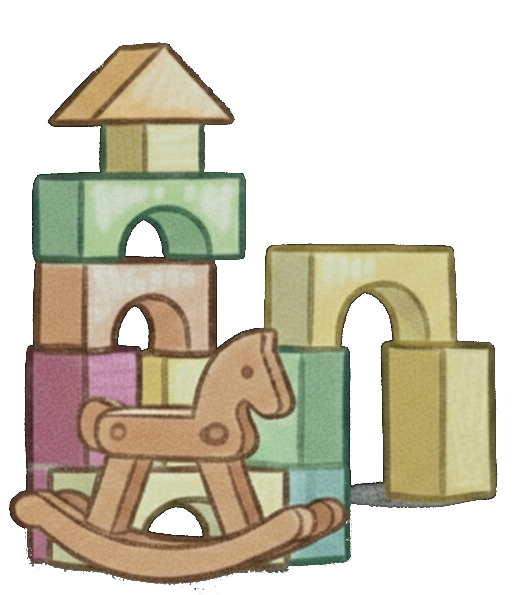
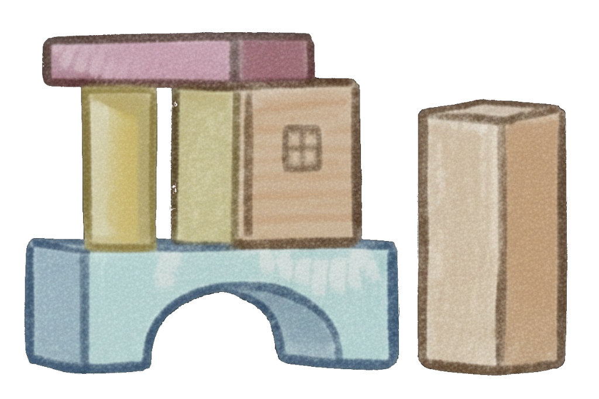
Una herramienta clínica de vanguardia que transforma el diagnóstico y seguimiento del Trastorno Desafiante de Oposición a través de minijuegos interactivos y métricas de comportamiento en tiempo real.
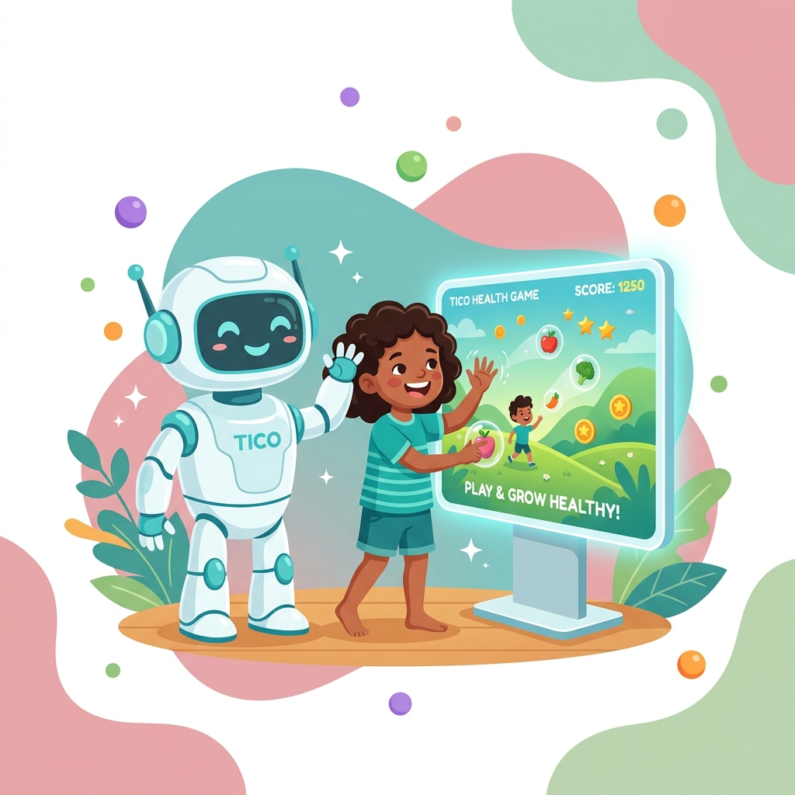
El Trastorno Desafiante de Oposición (TDO) es un patrón persistente de conducta hostil, negativista y desobediente hacia figuras de autoridad. En México, afecta silenciosamente a millones de niños que no reciben diagnóstico oportuno.
De niños y adolescentes en México con señales de TDO, muchos sin diagnóstico formal.
La mayor incidencia ocurre en la etapa escolar, donde la intervención oportuna es crucial.
Unimos la psicología clínica con la interactividad de los videojuegos para crear una experiencia terapéutica integral, objetiva y lúdica.
Mide y registra métricas precisas de conducta, tiempos de reacción y seguimiento de órdenes mientras el paciente juega.
Entorno de minijuegos lúdicos diseñados científicamente para retar al niño sin generar frustración excesiva.
Genera reportes detallados de comportamiento para que los terapeutas analicen la evolución con datos empíricos robustos.
Asistente virtual que genera empatía y rapport con el menor, guiándolo amablemente en cada reto y decisión.
Ejercicios para modular el control de impulsos, fomentar la tolerancia al error y reforzar la concentración.
Tratamientos apoyados en metodologías de Terapia Cognitivo-Conductual (TCC) adaptadas a la tecnología actual.
Acompaña a Tico en una divertida aventura llena de colores, retos interactivos y burbujas por explotar. Los niños se sumergen en minijuegos diseñados para evaluar su nivel conductual mientras se divierten:
Desafíos que cambian de dinámica para evaluar adaptación y flexibilidad ante nuevas reglas.
Tareas que requieren inhibición de respuestas y control atencional bajo distractores.
Diseño optimizado para capturar el interés del niño sin sobrecargas sensoriales.
Desplázate hacia abajo para ver cómo progresa el videojuego desde la pantalla de inicio hasta el reporte clínico final.
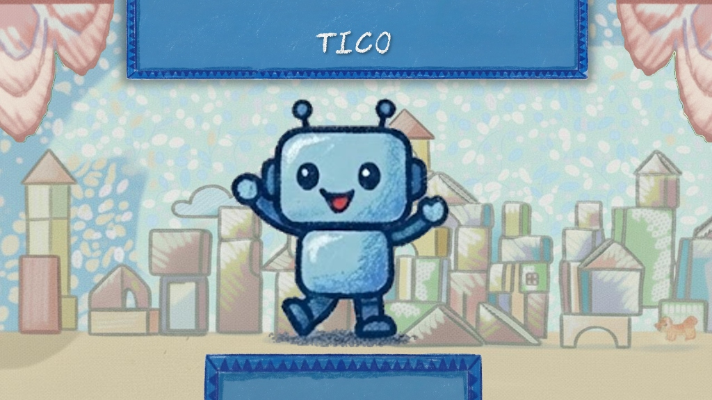
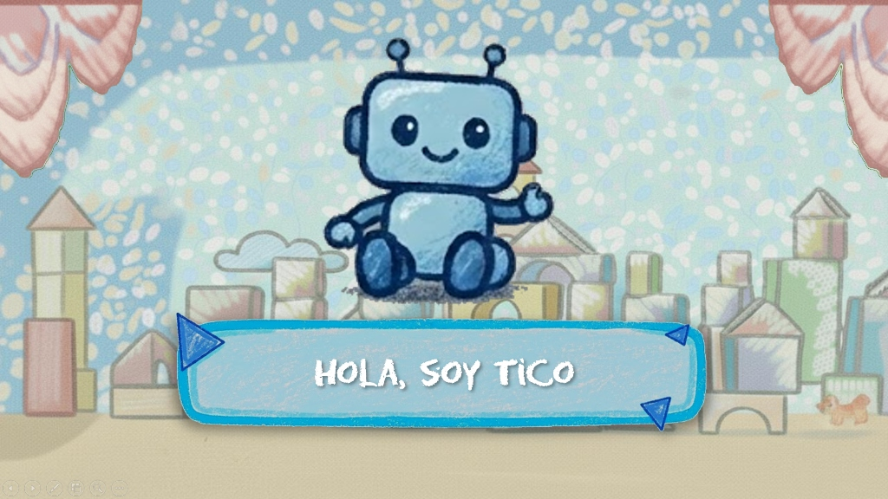
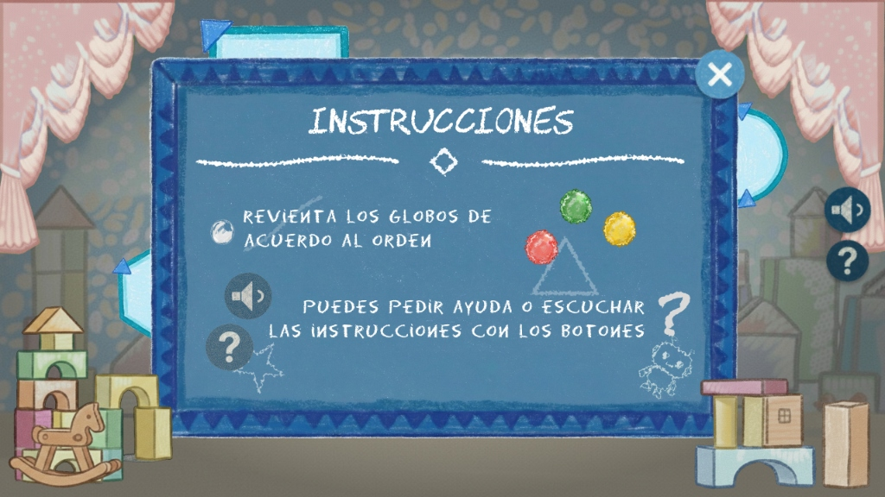
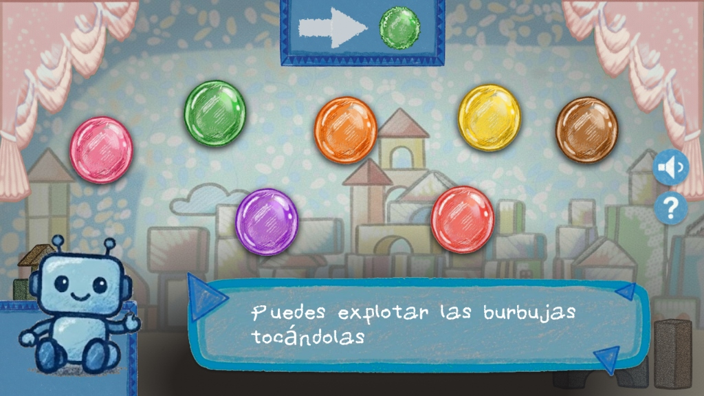
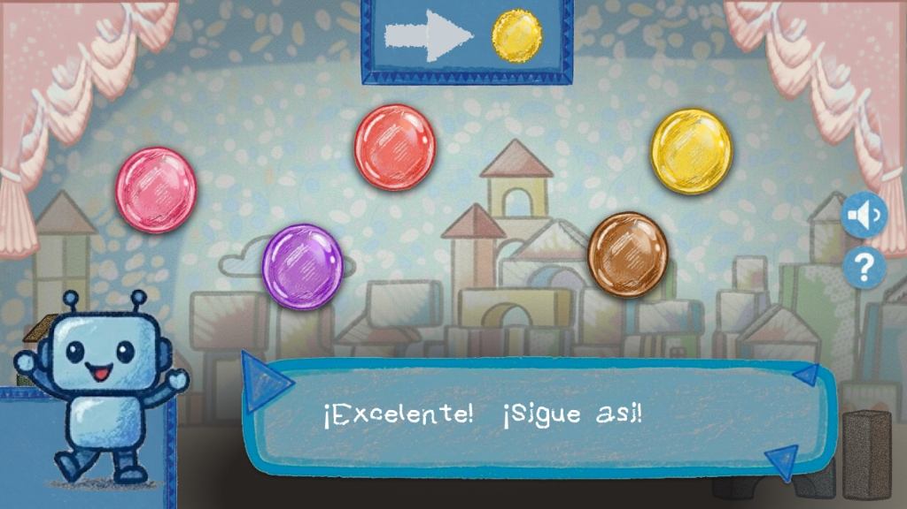
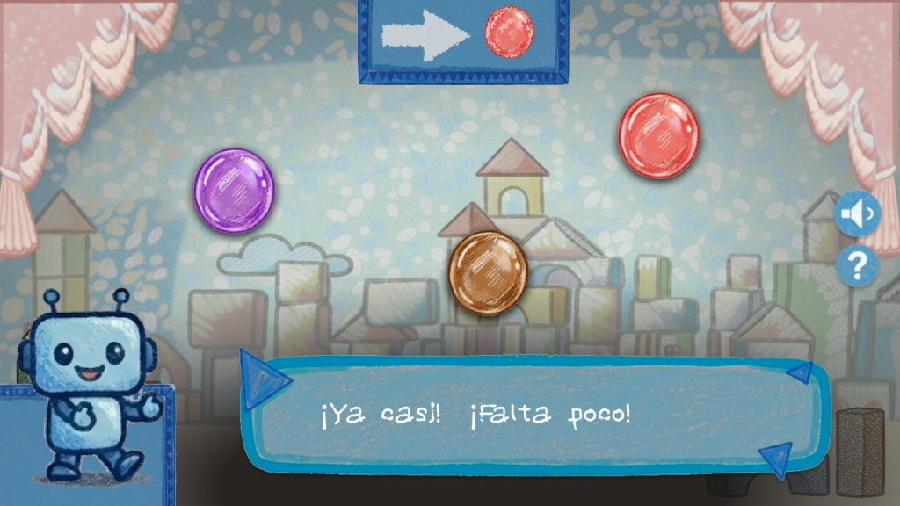
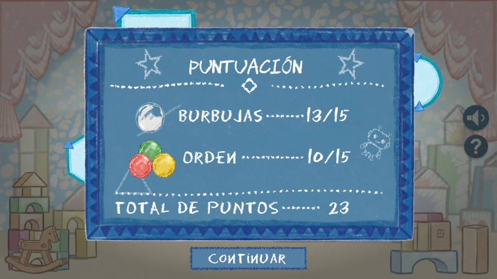

Tico ha transformado la manera en que realizamos el seguimiento clínico. Los niños acuden contentos a jugar en la tablet mientras nosotros obtenemos métricas objetivas de su tolerancia a la frustración y obediencia, eliminando sesgos de observación.

Medir el TDO de manera objetiva siempre ha sido un reto en consultorio. Con TICO, vemos el comportamiento del niño en tiempo real, lo que nos facilita tomar decisiones clínicas basadas en evidencia concreta.

El reporte conductual que arroja el software es sumamente claro. Nos permite entablar comunicación más fluida con los padres y la escuela para estructurar el plan de intervención personalizado.
Un equipo interdisciplinario comprometido con el desarrollo social y la salud mental de los niños en edad escolar.
Somos un equipo que une el poder de la informática interactiva con las mejores metodologías de la terapia psicológica infantil. Nuestra misión es dotar a terapeutas y padres de una herramienta diagnóstica interactiva y lúdica capaz de medir y registrar parámetros conductuales objetivos en tiempo real.
Diseñamos este software convencidos de que las terapias tradicionales de observación pueden complementarse con datos digitales cuantitativos, facilitando un tratamiento adaptativo de acuerdo al progreso clínico de cada niño.
Desarrollo de mecánicas lúdicas, backend robusto y algoritmos de seguimiento conductual.
Validación de metodologías terapéuticas y análisis de comportamiento infantil.
Generación de reportes clínicos objetivos para decisiones basadas en datos.
Mantente informado con investigaciones recientes, consejos terapéuticos y noticias del ámbito de la salud mental infantil.
Conoce cuáles son las señales tempranas de alerta del TDO y cómo distinguirlo de conductas naturales en las etapas del desarrollo escolar.
Leer más →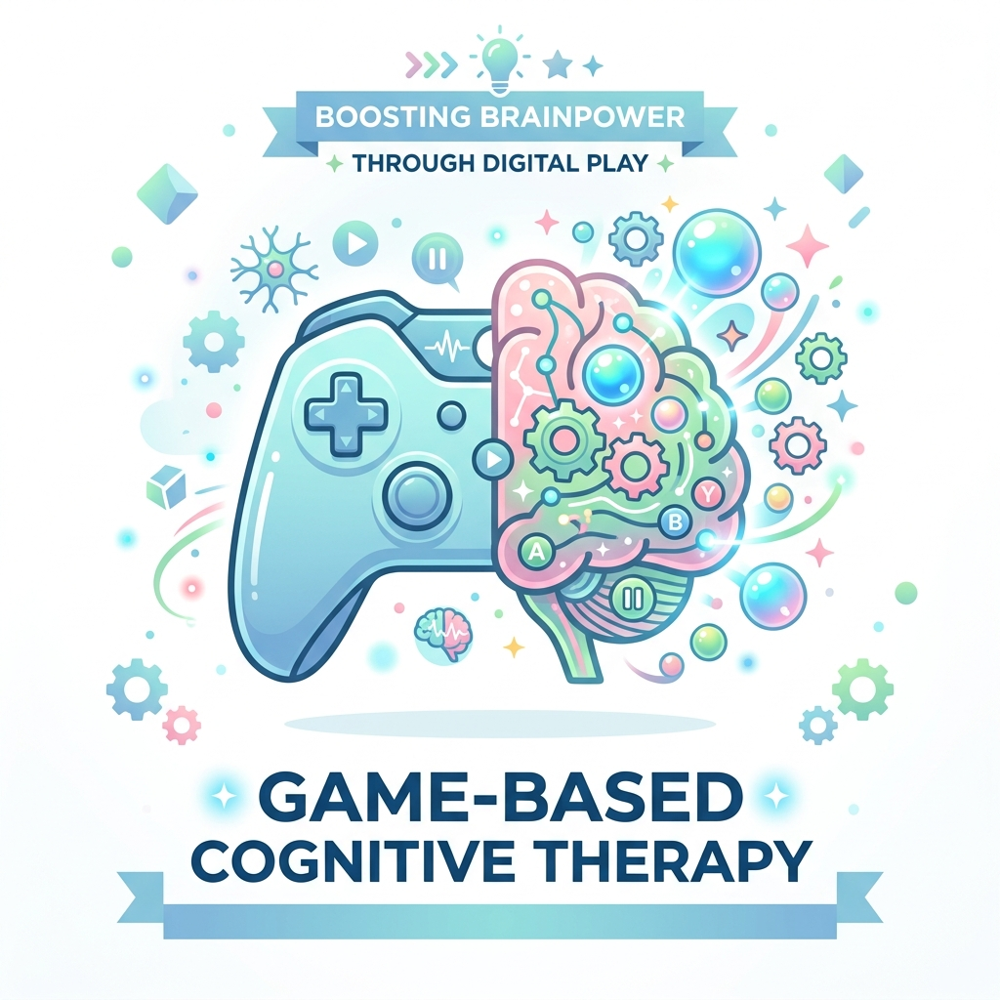
La gamificación y la interactividad permiten establecer mayor compromiso y motivación en el niño, revolucionando la intervención clínica.
Leer más →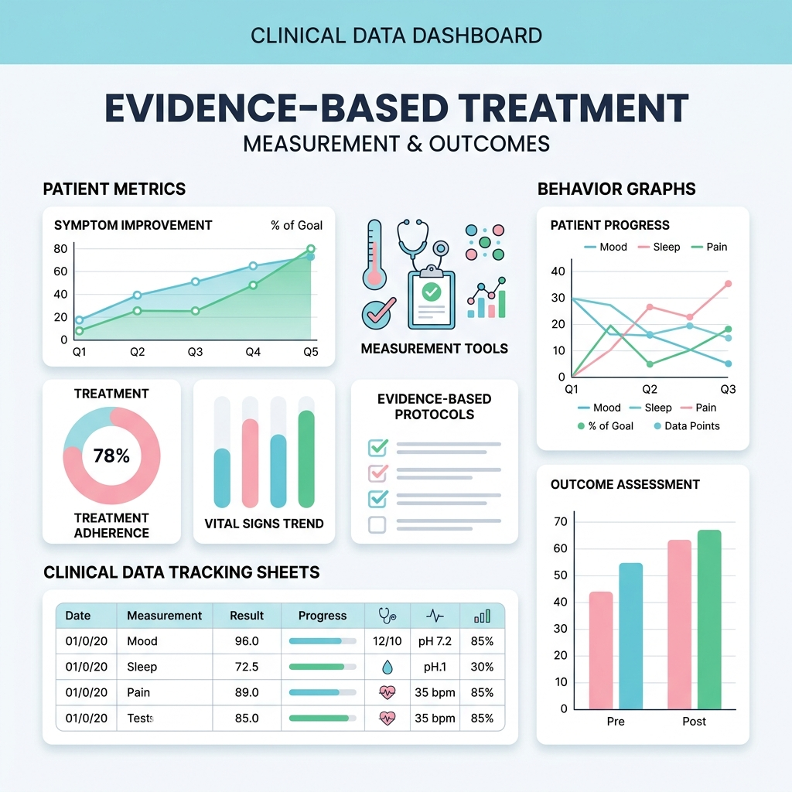
Cómo la obtención de métricas precisas permite evaluar y ajustar el tratamiento personalizado basado en evidencia real.
Leer más →Buscamos conectar con mentes creativas, escuelas, psicólogos y organizaciones que compartan nuestro deseo de mejorar la salud mental infantil a través de la tecnología.
Si nuestra visión resuena con tu práctica clínica o institución escolar, exploremos juntos cómo llevar la iniciativa a más niños.
Envíanos un mensaje y te responderemos a la brevedad.